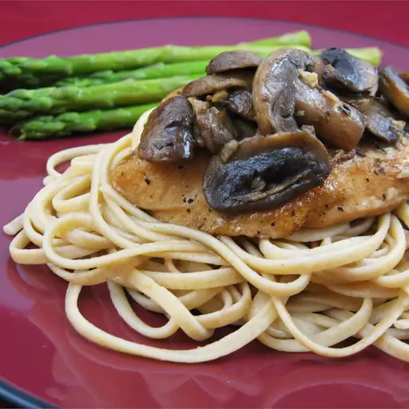

Chicken Breasts with Balsamic Vinegar and Garlic

Description
This is a quick, easy and impressive gourmet dish. Goes great with roasted new potatoes.
Ingredients
- 4 skinless, boneless chicken breasts
- salt and pepper to taste
- ¾ pound fresh mushrooms, sliced
- 2 tablespoons all-purpose flour
- 2 tablespoons olive oil
- 6 cloves garlic
- ¼ cup balsamic vinegar
- ¾ cup chicken broth
- 1 bay leaf
- ¼ teaspoon dried thyme
- 1 tablespoon butter
Steps
- Season the chicken with salt and pepper. Rinse the mushrooms and pat dry. Season the flour with salt and pepper and dredge the chicken breasts in the flour mixture. Heat oil in a skillet over medium high heat and saute the chicken until it is nicely browned on one side (about 3 minutes).
- Add the garlic. Turn the chicken breasts and scatter the mushrooms over them. Continue frying, shaking the skillet and stirring the mushrooms. Cook for about 3 minutes, then add the vinegar, broth, bay leaf and thyme. Cover tightly and simmer over medium low heat for 10 minutes, turning occasionally.
- Transfer the chicken to a warm serving platter and cover with foil. Set aside. Continue simmering the sauce, uncovered, over medium high heat for about 7 minutes. Swirl in the butter or margarine and discard the bay leaf. Pour this mushroom sauce mixture over the chicken and serve.
Nutrition facts (per serving)
268 calories | 12g fat | 10g Carbs | 31g protein